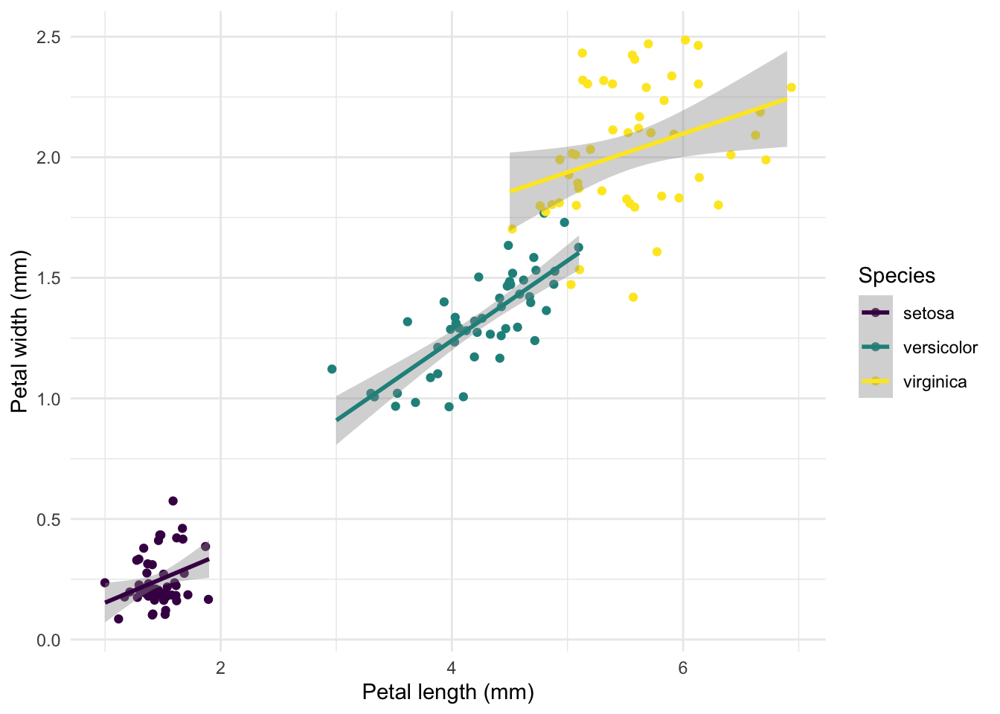

# dependencies
library(tidyverse)
# data tidying
iris2 <- iris %>%
as_tibble() %>%
select(pl=Petal.Length, pw=Petal.Width, sp=Species)
iris2# A tibble: 150 × 3
pl pw sp
<dbl> <dbl> <fct>
1 1.4 0.2 setosa
2 1.4 0.2 setosa
3 1.3 0.2 setosa
4 1.5 0.2 setosa
5 1.4 0.2 setosa
6 1.7 0.4 setosa
7 1.4 0.3 setosa
8 1.5 0.2 setosa
9 1.4 0.2 setosa
10 1.5 0.1 setosa
# ℹ 140 more rows# a quick graph
ggplot(iris2) +
aes(pl, pw, col=sp) +
geom_jitter() +
geom_smooth(method="lm", formula="y~x") +
scale_color_viridis_d() +
guides(colour=guide_legend("Species")) +
xlab("Petal length (mm)") + ylab("Petal width (mm)") +
theme_minimal()
# a little helper function to get adjusted R2 of a linear model
lm_adj_r2 <- function(x) summary(lm(pl~pw, data=x))$adj.r.squared
# group-wise statistics
iris2 %>%
nest(data=c(pl, pw)) %>%
mutate(adj_r2=map_dbl(data, lm_adj_r2))# A tibble: 3 × 3
sp data adj_r2
<fct> <list> <dbl>
1 setosa <tibble [50 × 2]> 0.0914
2 versicolor <tibble [50 × 2]> 0.611
3 virginica <tibble [50 × 2]> 0.0851